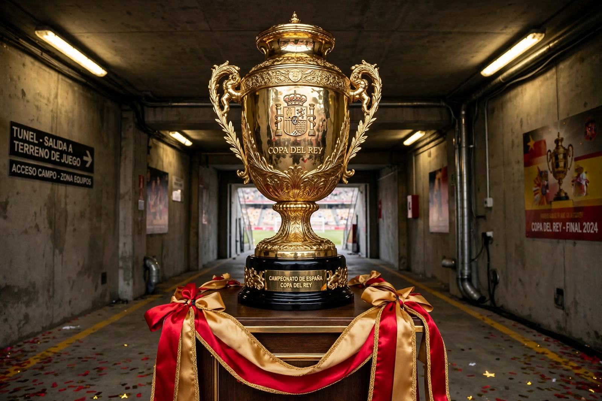

From Wikipedia, the free encyclopedia
| Copa del Rey | |
|---|---|
 The Copa del Rey trophy presented at the final in Seville's La Cartuja stadium | |
| Founded | 1903 |
| Full name | Campeonato de España – Copa de Su Majestad el Rey |
| Organised by | Royal Spanish Football Federation (RFEF) |
| Most titles | FC Barcelona (31) |
| Related | La Liga; Supercopa de España |
The Copa del Rey (Spanish for "King's Cup") is Spain's premier annual football cup competition, formally the Campeonato de España, and the oldest Spanish football tournament still in existence, founded in 1903 — a year after the one-off Copa de la Coronación in which Barcelona and Real Madrid first met. Open to clubs from across the Spanish league system, it is contested in a knockout format; since a 2019 revamp most rounds are single-leg ties hosted by the lower-division club, producing celebrated giant-killings, with two-legged semi-finals and a one-off final, in recent years staged at La Cartuja in Seville.
Barcelona are the competition's record winners with 31 titles, ahead of Athletic Bilbao — whose 24 titles and enormous travelling support make the cup a Basque institution — and Real Madrid. The cup's name and trophy have changed with Spain's political history: it was the Copa del Presidente de la República during the Second Republic and the Copa del Generalísimo under Franco. Cup finals between Barcelona and Madrid are special editions of El Clásico, including the 2011 and 2014 finals, both won by Madrid, the latter remembered for Gareth Bale's extraordinary solo winning goal.
More than 120 clubs enter, from the regional divisions to La Liga. The winners qualify for the UEFA Europa League and for the four-team Supercopa de España alongside the league's top two and the cup runners-up.
Categories: Copa del Rey | Football cup competitions in Spain | National association football cups